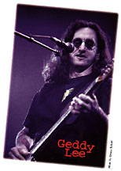

Taken from Bassics -- Volume 6, Number 2
Counterparts, Rush's 1993 album, ended an era. An era that needed
ending. Although the album was good, both critics and fans greeted it, as
they had Roll The Bones, with yawning interest -- alt-rock was at
its zenith moment and Rush was never a very alt-band. The band knew
something was up.
"It had been a tough couple of years in terms of the band," Geddy Lee says.
"Counterparts was not what I'd consider to be a tension-free record. There
was a lot of pressure."
Pressure from the label, who wanted a chart-topper. Pressure from fans
unhappy with Neil's dabbling in relationship-based song writing. And,
according to rumors, internal pressure, too.
Soon after the Counterparts tour, the rumors started flying. Rush were on
hiatus. Atlantic was dropping Rush. Rush were breaking up. Rush were going
to sue anybody connected with the Working Man tribute album.
Not that any of this was true. It's just that in the back of every Rush
fan's mind is the creeping half-knowledge that each album might be the last.
So, when word began leaking out of Toronto that Rush had no plans to tour or
write, all the worst fears seemed true.
Alex was doing a solo album -- 1995's Victor. Neil was working on the
Buddy Rich tribute. Then Neil disappeared into the deserts of North Africa on a
motorcycle. And Geddy? No one had heard a peep out of him.
That sealed it. One of the most influential bands in all of rock 'n' roll
was history. Wasn't it?
No. After two decades of almost solid recording and touring, Geddy, Alex and
Neil were actually living their lives. And, in a roundabout way, were
plotting their return.
Band members hardly saw each other. "We have very different lives now," Geddy admits. "His (Alex's) kids are getting ready to move out of the house. It's a different world, but we try to keep in contact. We see each other every couple of weeks, anyway. I remember the first day I saw that guy's mug. It was junior high and he was wearing a really weird paisley shirt. I remember the smarmy look on his face. I've known the guy all my life."
Test For Echo/Sniffing Around
With one era in its grave, Rush gathered in early '96, attempting to begin another. Neil came into the Toronto area from wherever it is that Neil was. Once again, Rush set up composition shop at what's known as "Boys' Camp." Neil off at one end, typing lyrics into a computer. Alex and Geddy at the opposite end jamming, writing, knocking down basic tracks on Macintosh-driven Pro Tools software.
But after all the down-time, trepidation was in the air.
"I would say that the first few days were a little bit of walking on eggshells," Geddy says. "A little bit like three dogs circling each other and sniffing each other. Alex and I did no writing for the first four days, we were just sitting there trying to get on the same page. You can't take three people and throw them into a room, especially with three people who have so much baggage, so much history that you have to feel each other out, make sure that you really want to do this."
This time even their accustomed writing practice was different.
"Alex and I, the last four or five records, worked more in isolation from Neil," Geddy says. "So traditionally when we get a song to the point where it sounded like a song, we'd bring Neil in and he'd makes his comments on the song and we'd carry on. But this time, I think, ideas were flowing fast and furious. We'd get 3/4 of the way through one song, when an idea would come for another song. So instead of leaving that idea in limbo we'd move on and get a second song. We ended up having five songs that were kind of under construction. We just wanted to keep following the energy, when the creative energy was there. We got a little obsessive about getting the songs finished to present to Neil. I guess it must have been very frustrating for him without us even realizing it. When we presented the first five or six songs to him they were pretty well finished. Thankfully, he loved them. It was great for Alex and I to feel that we were so charged and creative. I think we were just getting off on it too much and that felt so good after such a long break. And the previous writing sessions for Counterparts were not easy ones. We were enjoying the moment."
What emerged from those Lifeson-Lee-Peart moments was Test For Echo, released in early September. It's the best Rush opus since the band's early '80s work. The sound is stripped-down drums/bass/guitar (nary a keyboard to be heard). Hooky songs that rock with renewed honesty. Of course, it's a Lyrics By Peart situation -- meaning it's Man vs. Technological Society straight out of the school of Ayn Rand. His lyrics can be forced at times, but there are gems in here like "Dog Years" and "Driven."
"I was really kind of in a void making this record," Geddy admits. "I hadn't listened to the radio much. I'd kind of pulled myself out of the music scene and everything about it for about 18 months. When the songs were written and being recorded, it kind of dawned on me: I wonder what this record's like in the context of our past? And in terms of what's going on out there. Then I went through this period where I started listening to the radio and I kind of got the horrors: Boy, where do we fit into all this? It's kind of mild compared to other stuff."
Writing and Recording
There's an unmistakable expansiveness and spontaneity to TFE (not a bit mild), one that's been missing the past few albums. It seems so organic, so jam-like, and that's not too far from the truth.
"Alex and I jam, that's how we write everything," Geddy says, although he's quick to emphasize that jamming produces but a kernel of the song. When Geddy and Alex get to where they're happy with a song's direction, they record it. Then Geddy goes to work. "With this record, we've used a lot of computer technology in terms of recording straight into a hard disk. The luxury that gives us is that if Alex and I get an idea for a song, we can play it straight into our computer, which is essentially a hyped-up tape recorder. From there, I can play with that arrangement and kind of assemble the song. That really worked tremendously well this time, because a lot of that you can do, I can basically sit there with headphones on and play with the arrangement. It gives you a little bit more objectivity instantly. So, I guess, in a sense because you're not playing the thing a million times, it does have a bit more spontaneity."
Not that technology is always a blessing. Alex commented in one interview that a hard drive gone-south almost took a song with it. Geddy confirms this. "We did have some problem with "Driven" -- the hard drive. It was really the only problem we had. When we were doing Counterparts, we were using other computers -- it was a nightmare. This time saving device was costing us our lives."
 Therein rests a major irony. I Throughout their two-decade plus history Rush have embraced everything from synths to MIDI triggers to computer-based recording. And, yet, atop all this digitally-made music, Neil has offered a running commentary on the ills of technological society. Check "Virtuality" on the new album.
Geddy assesses it thus: "I think he's more skeptical than cynical about the rush to embrace the benefits of the Net. I can't say that I agree with him on that front. The song 'Virtuality' deals with that and, you know, in one sense I disagree with what the song says and, in the other, I kind of understand that point of view. So I can do the song even though I don't wholly agree with it. There is an aspect of it (the Net) that, like anything, can be abused, that can be a waste of time. But the benefits are tremendous -- if you're researching something, it's out there."
In particular, the band has caught heat on the Net. "Neil's had experience with this, where a rumor almost becomes a fact. It gets talked about by so many people so quickly. What was our supposed reaction to the tribute album got so distorted and mangled through the Internet conversations (on the very active alt.music.rush newsgroup). It's scary. The album came out and there were rumors that we were suing people and we were upset at the musicians involved -- and we never said any of that stuff. It was totally distorted. The fact was, we asked one question: Is this a 'tribute' or is it some record company trying to exploit our fans? From that sprung all that other crap. It comes with the territory.
"In a way it's a continuing story from 'Vital Signs' forward," Geddy continues. "We've been caught up in the technology ourselves. We've been victims of our own criticism to a certain extent. We've fallen into that trap in terms of how we've gotten carried away by technology in writing our music, but it's all acceptable under the guise of experimental music which, in some sense, we make, even though it's accessible music. It's not Brian Eno ambient music. it's an experiment that goes on with us during the making of every record. There's not a straight path to success for every record, there's no blue print -- you never know what's going to happen."
As Funky As White Canadians Get
Geddy's gone back to the basics with his bass. As on Counterparts, he's using his early 70s Fender Jazz with its original passive pickups. Although he owns two new Jazz basses, the old one gets the nod because it has those distinctive characteristics older instruments have -- which Geddy's weak to define. The difference between old and new is "subtle but not so subtle -- it's got a meatier sound."
Which might account for the underlying funky moments on the new recording. Rush funky? Yes, there are funkified moments on TFE, although Geddy just laughs about them. "About as funky as white Canadians get," he says.
Seriously, TFE is a grooving album, a direction Geddy's been moving in over the past three albums. And he produced the groove with a slightly different amp lineup -- no amp at all.
"I used a different combination of DIs. It's the first album where I recorded without the use of a live amp. It's weird -- I never expected it to work. I used a Demeter Tube Direct and then I would send that direct sound into a Palmer Speaker Simulator. And then I would send direct sounds separately from the Demeter to a Sans Amp and I would distort the Sans Amp in such a way that it gave it kind of a live amp sound. And with a bit of compression and EQ, I ended up with two tracks -- one purely a tube DI, the other that was a combination of the Sans Amp and the Palmer Speaker Simulator. It gave me that amp sound but without any weird phase canceling." Geddy credits recording engineer Cliff Norell: "he got a great sound without using the amp. He thought he could and I said, 'Go for it.'"
On tour, Geddy is using his recording setup for house sound and a Trace Elliot (head and cabinets) for stage sound.
Neil Peart:
Off His Cycle & Behind The Kit
That Neil is no fan of technology is no secret. But a little secret of Neil's was ruined on the Net, in his mind at least, and you can't help but think that it's expanded his bitterness with technology.
Neil had a ritual he enjoyed. Fans would write to him in care of Modern Drummer. Every so often, the magazine would forward these missives to Peart and he'd, then, take a day or so penning replies and sending them off at his own expense. A nice, touching thing in the fairly sterile world of fan-artist relations. The trouble is that word got out that if you wrote to Neil, he'd answer you. Somebody posted this information on the Net. Modern Drummer was deluged with cards and letters for Neil, which were passed on to Neil, wherever Neil was. There was no way for Neil to possibly answer all the correspondence, so rather than select some, he decided not to answer any of them. He made his decision public in a biting open letter in the August Modern Drummer.
Wrong or right on that count, Neil was unafraid to criticize his own drumming. After playing on the Buddy Rich tribute, the most revered drummer in rock, changed. Since Neil only does press once a tour starts, Geddy explains the changes.
"Neil's changed his style quite a lot, although he's maintained his style. As he likes to put it: he's added more tools to the toolbox. He wasn't happy with the way he was grooving, he wanted a little more snap to his playing."
A new snap came courtesy of study with Fred Gruber. "They mostly talked about philosophy of groove, swing, and stuff like that," Geddy says. "He spent a year, anyway, changing the way he holds the sticks, the height of the snare drum, the position of his drums. Some pretty profound stuff for a drummer to suddenly change. He spent a good solid 8 months practicing every day to get that to the point where he thought we could make a record. He couldn't hit the drums as hard as he wanted to because you have to develop new muscles. I noticed that through rehearsals and up into recording his drumming got more and more back to the same kind of power. It really sounds different than on previous records. It just has a bit more bounce and if you listen to his work, particularly on the high hats, there's a great groove thing happening. Of course, he's still thunderous and his parts are still as mental as they ever were. He hasn't really lost the bombast, he's just added some more swing to the whole thing."
Respect
Even with the odd blip of an album (name your suspects), Rush have been one of the most consistent powerful rock bands over the last two decades. Ask any drummer who influenced them and you'll hear Neil's name. Ask people about songs and out comes the Rush catalog.
But have you ever seen the band on the cover of Rolling Stone or Spin? Player-oriented mags get in line to talk to these guys, but -- even as they top the charts -- the mainstream press can hardly be bothered to give an album review. Odd situation for a band that has been "as influential as Black Sabbath and jazz as a whole on rock 'n' roll" (as declared in huH magazine).
Part of the answer rests with the band, part with the attitude of certain publications.
"It's a weird thing," Geddy sighs. "Partly of our own creation, I think, because we've never gone out of our way to court that kind of press. And, also, we don't make ourselves available. If they want us to get together for a special photo session (a Rolling Stone won't put a band on its cover without fresh photos), well, they're not big priorities for us. Admittedly, it's not the smartest thing for promoting a record, but from our point of view we'd have to totally turn our lives upside-down, Neil would have to come down from Quebec. It would have to be a whole big thing just to have a photograph. I think we've generated some of that ourselves, just because we shy away.
"But also there's always been a lack of recognition among the older critics who arc established. We're like a cult band and they would prefer to see us remain that way. The other thing is that we don't go kill ourselves to go and play Europe and Japan every time. We go to those places very sporadically. Even though there's demand, we can't fit it into our lives and that has a toll to pay on our total image. We recognize the importance of having a life outside of the band -- sometimes that takes precedence over promotion."
Noting a time when that wasn't the case, Geddy says, "we've had to slow down a bit. We're not 25, we just can't keep doing that. It amazes me some of these guys -- like Bryan Adams who go on the road for 3 or 4 years."
Sounds Different
TFE is very different-sounding album for Rush. It's not polished and airy, there's none of the band's trademark layer-upon-layer of instrumentation. That was the plan from the get-go.
"We very rarely know what we're going to do before we end up doing it," Geddy says. "But with this album the only thing we kind of agreed on was to go for a specific sound. We didn't know what kind of music we'd be writing, but we wanted the sound to be more upfront, a bit more stripped down, and for lack of a better description, kind of more 'American' sounding. Our roots, in some ways, we thought were always kind of British. Our early records were quite dry and up-front. That's why we used an all American production team on this record strictly for that purpose. To see if we get a different sound this way, to see if there's a different sensibility working with these people. And there certainly is. When the guys in your band never change it's nice to have people in the control room who do."
Is Rock Forever?
I posed that question to Geddy. Asked if we weren't coming to realize that rock 'n' roll is like jazz and blues -- a valid form with artists who will make valid art until the day someone takes the Marshalls and Fenders away.
"Well, I hope that's true," he says. "And it seems to be proving itself to be true. Well with some artists anyway, who are still hanging out and are productive in their 40s. Certainly, for my sake, I hope it's true. That was a fear of mine before making this record: you know, is it time to give up? Is this a young man's thing and should I be moving on to finally getting a real job? I missed it too much. The time off really recharged my interest in it and I didn't feel it was wrong for me to be there."
And it probably never will feel wrong.
{kind=link}